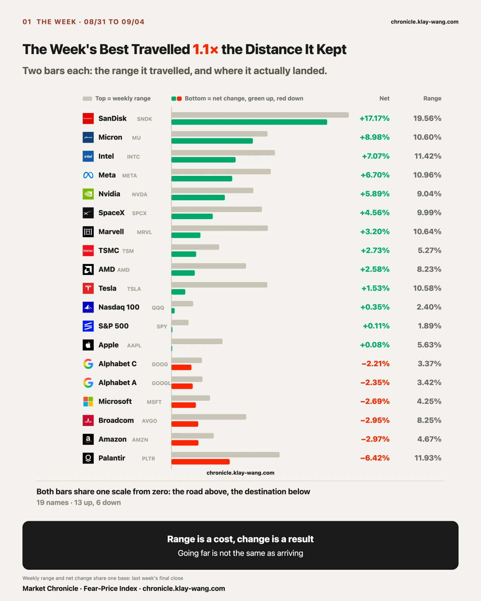
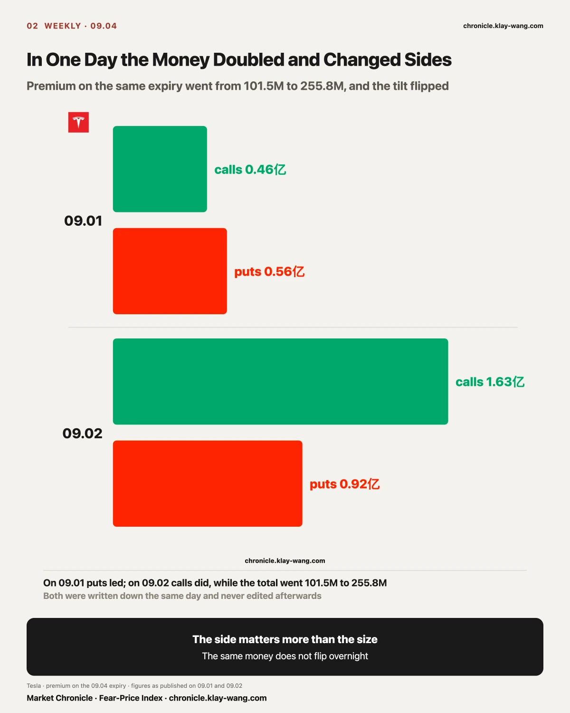
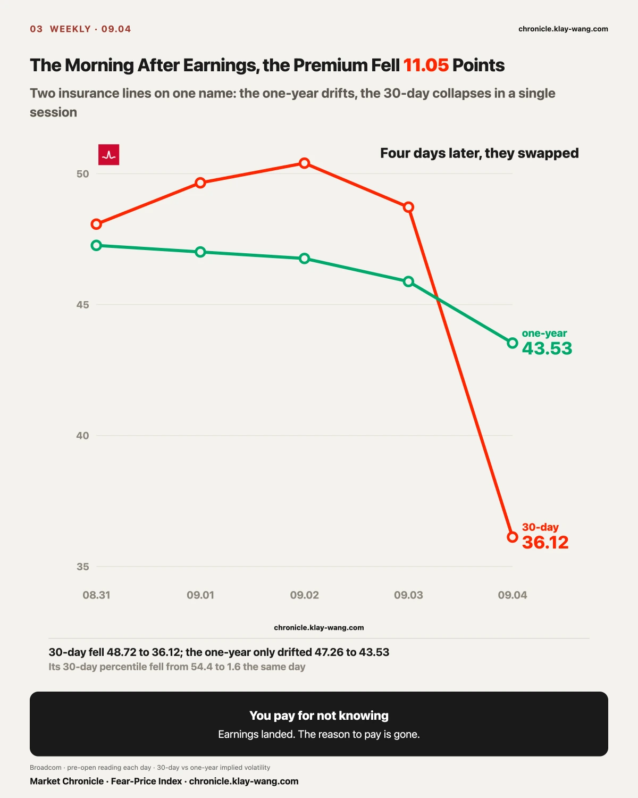
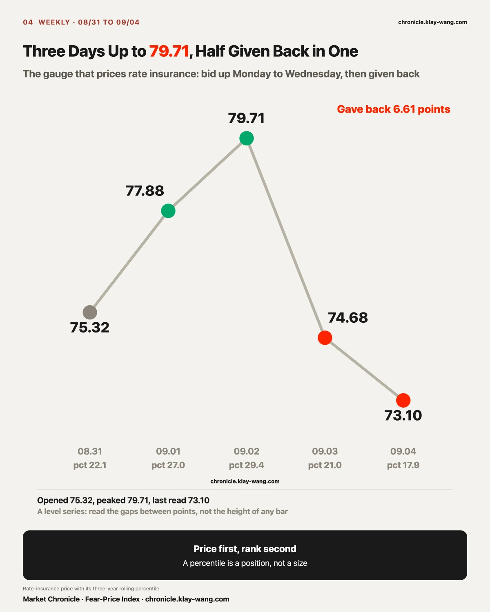
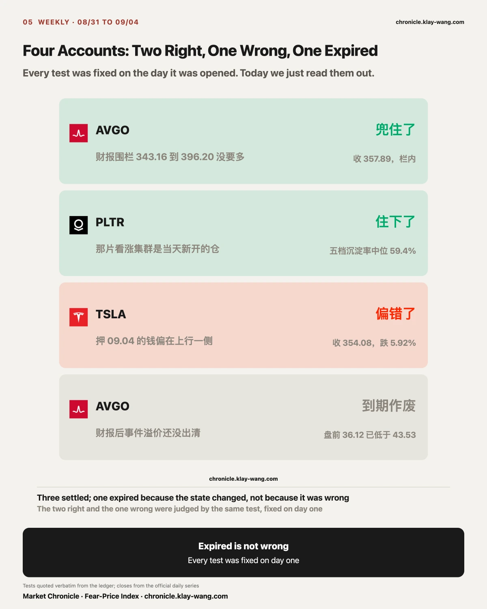
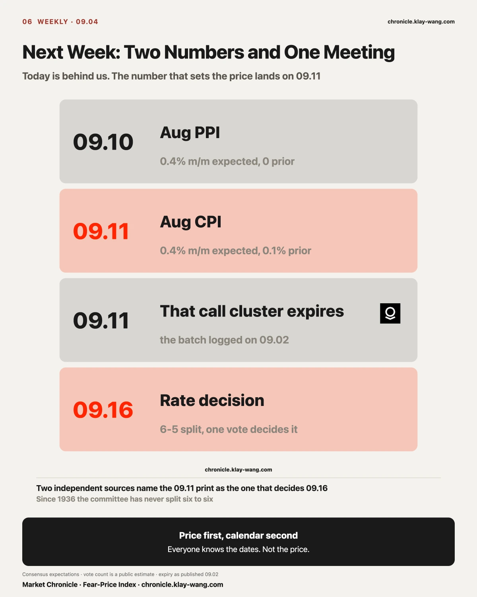
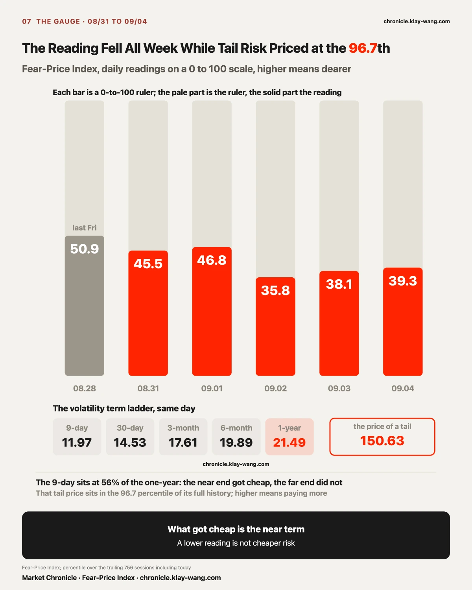

One. A louder story is not the same as somebody paying for it. Payrolls came in near three times the forecast and the odds of a hike went past sixty percent, yet short-dated Treasuries barely moved on the day, long-dated Treasuries actually rose 0.17 percent, and rate insurance got cheaper for another session. The market had already priced this in.
Two. Getting the direction right is not the same as making money. Broadcom's event premium moved 11.05 points in two days. Anyone who bought on the day it was priced had to earn those 11 points back before profit even entered the conversation, direction correct or not. Tesla's nine strikes taught the same lesson: three finished in the money, none made its cost back.
Three. A flat index does not mean a quiet week. The S&P closed the week up 0.11 percent, while the median weekly range across seventeen single names ran 4.8 times the index's own, and the gap between the strongest and the weakest was 23.6 points. What was calm was the index, not the market.

The S&P 500 closed the week up 0.11 percent on a 1.89 percent range; the Nasdaq 100 up 0.35 percent on 2.40 percent. On those two lines alone, nothing happened.
Underneath, it looked nothing like that. The median weekly range across seventeen single names was 9.04 percent, close to five times the index. SanDisk, the strongest, rose 17.17 percent; Palantir, the weakest, fell 6.42 percent. The two ends sat 23.6 points apart.
The four biggest gainers were SanDisk, Micron, Intel and Meta. The four biggest losers were Palantir, Amazon, Broadcom and Microsoft. Storage moved up while several large software and cloud names moved down.
A flat index only means the gains and the losses cancelled. The week's events still happened; they just did not land on the index.
Then compare the distance travelled with where each name finished. SpaceX swung 9.99 percent and finished up 4.56; Tesla swung 10.58 and finished up 1.53; Marvell swung 10.64 and finished up 3.20. All three travelled two to three times the distance they kept. Anyone holding them rode far more turbulence than the result they were left with.
So the week was flat by index and sharply split by name. Whether that split closes before CPI is worth more attention than the index itself.

The week's two biggest gainers were SanDisk at 17.17 percent and Micron at 8.98 percent. They were also the second and third largest by unusual premium on the week, 1.095 billion and 830 million dollars.
Look at when that money arrived.
SanDisk closed 09.03 up 0.10 percent, essentially flat, while its unusual premium jumped from 4 million the day before to 197 million, 75.2 percent of it on calls. The next day it rose 11.90 percent on 611 million of premium, 92.5 percent calls.
Micron closed 09.03 up 0.22 percent, also flat, while premium went from 34 million to 416 million, 85.3 percent calls. The next day it rose 6.10 percent on 634 million, 92.3 percent calls.
Both names saw premium jump an order of magnitude on the same day, on a day their prices barely moved. Both rose hard the next.
I am recording this rather than reading it as somebody knowing something in advance. An earnings calendar, a sector rotation and dealer hedging all leave the same shape, and premium alone cannot separate them. What can be recorded is the sequence: the money came first, the price came after, one session apart.
Now look at the tape on 09.04. The S&P fell 0.39 percent and the Nasdaq 100 rose 0.18, while all ten semiconductor and storage names closed green at a median of 4.53 percent, and eight of the nine large software and consumer names closed red at a median of minus 2.04. The two medians sat 6.57 points apart.
On the day payrolls printed three times the forecast, the index fell and the money went into semiconductors.
The full week points the same way: semiconductors and storage at a median of 5.67 percent, large software and consumer at minus 2.35. That is where the 23.6 point spread on the panorama comes from: two groups walking in opposite directions, pulling that far apart.
This reading can be overturned, and here is the condition: if semiconductors give it back next week while large software catches up, this week's split was a calendar dislocation and the section has to be rewritten.

On 08.27 Tesla closed 354.81. Nine strikes surfaced together in the flow table that day, all expiring 09.04, with the 372.5 line running 19.77 times the prior day's open interest.
Over the next five sessions the money on that expiry did something uncommon: it flipped sides in a single day.
On 09.01 the expiry held 101.5 million, with 55.59 million on puts against 45.86 million on calls. The weight sat on the downside.
On 09.02 the same expiry went from 101.5 million to 255.8 million and turned around: 163.4 million on calls against 92.35 million on puts. Roughly 150 million of new money arrived in one day, almost all of it on the upside.
On 09.03 eight of the nine strikes had cleared their cost, with only the 375 line short by 92 dollars.
At that point the 150 million on the upside was winning.
Today all nine expired, and not one made its money back.
The stock closed 354.08. Three strikes, 345, 350 and 352.5, finished in the money. The other six went to zero. Put the original cost back into the picture and it reads differently: 345 cost 1,432 and settled at 908; 350 cost 1,113 and settled at 408; 352.5 cost 963 and settled at 158. Every one of the six above them paid for nothing.
Yesterday eight of nine had cleared their cost. Today none had. One trading session apart, with the stock down from 376.37 to 354.08.
We put three boundaries in front of that section yesterday, and the first one was that in the money is not the same as making money. Today it demonstrated itself.

Before earnings the options market priced Broadcom to move 7.17 percent either way that night. Applied to the prior close, that gave a corridor from 343.16 to 396.20.
The fence ran its full course in four days. On 09.02 it closed 368.31, with 30-day insurance at 50.40 against one-year at 46.76, an inversion of 3.64 and the only one among the twenty-one names we watch. On 09.03 it opened 351.74, traded down to 342.331, which is 0.829 dollars below the floor, and closed 357.16 back inside. The test reads the close and only the close, so that trip does not count as a break.
By the morning of 09.04 the premium was gone. The 30-day reading fell to 36.12 against a one-year of 43.53. The inversion had turned over, from 2.84 above to 7.41 below, and the 30-day percentile fell from 54.4 to 1.6, the cheapest it has been in a year.
What you pay for before earnings is not knowing. Once the numbers land, the not knowing is gone, and so is the reason to pay.
Today it closed 357.89, inside the corridor. The fence held. Said plainly: the market asked 7.17 percent that night, and looking back, it did not overcharge.

The price of rate insurance read 75.32 on Monday, 77.88 on Tuesday, 79.71 on Wednesday, 74.68 on Thursday and 73.10 on Friday. It stopped climbing on Wednesday and fell for two sessions after. Friday was the clean test: payrolls at three times the forecast with the prior month revised up, and the price fell into the cheapest fifth of the last three years.
On Tuesday and Wednesday we wrote the same sentence twice: the hike story reached day three and the money that pays up in a panic never showed. The point was that the story was rising and the price was not.
This morning payrolls printed 162,000 against a forecast of 56,000, and July was revised from minus 23,000 to plus 21,000. Press coverage put the odds of a September hike above sixty percent, up from the mid fifties.
What has the market actually done about a hike? Three prices answer it without anyone having to say a word.
One, short-dated Treasuries barely moved, down 0.02 percent. That is the leg that should react first. If the market truly expected a hike sooner and harder than it had assumed, this is what gets sold. It was not sold.
Two, long Treasuries did not fall either. They rose 0.17 percent. A market genuinely worried about rates running away does not buy the long end on a payrolls day this strong.
Three, insurance on rates got cheaper for a second straight session. It reads 73.10 today against 74.68 yesterday and 79.71 on Wednesday, which puts it in the cheapest fifth of the last three years. Gold fell 0.84 percent that day, silver 1.21, and the dollar rose 0.25, so the risk side did move on rates.
All three point the same way: the market priced this hike some time ago. Its judgment now is that the arithmetic is settled and needs no further protection bought.
This does not mean there will be no hike. If they move on September 16 this paragraph still stands, because something already in the price does not require new insurance. What would break it is the other case, a hike followed by bonds falling hard and insurance jumping. That would mean the market had the arithmetic wrong, and we would have it wrong with them.
One more thing, to avoid a misread: cheap insurance says calm in the near term, not safety. On the same day, what equities pay for a crash sits in the most expensive three percent of its history. The near term is cheap. The tail is not.

Four accounts this week: two right, one wrong, one expired.
The two right. Broadcom's fence, written down 09.02 as 343.16 to 396.20, closed today at 357.89, inside. Palantir's 09.11 call cluster, written down 09.02 as newly opened, not old positions changing hands, showed five strikes with positive retention the next morning and a median of 59.4 percent. The new positions stayed.
The one wrong. On 09.02 we wrote that of the 255.8 million on the 09.04 expiry, 163.4 million sat on calls against 92.35 million on puts, so the money was tilted up. It closed 354.08, down 5.92 percent. The bigger side lost.
The one that expired, which is a different thing from wrong. On 09.03 we wrote that Broadcom's event premium had not cleared, with 30-day at 48.72 above one-year at 45.88. The test was fixed the same day: if the next pre-open reading crossed below the one-year, the judgment expires. This morning it read 36.12 against 43.53. That sentence was true when it was written. Today it simply no longer applies.
The distinction has a use. Wrong needs a post-mortem; expired does not. Put them in one column and the scoreboard flatters or damns you for no reason.

Fear-Price Index · 2026-09-04 · reading 39.3/100: one-year volatility VIX1Y at 21.49, in the 39.3rd percentile of the past three years, where higher means more expensive. Daily ledger and definitions at chronicle.klay-wang.com
The short end got louder all week. The one-year price of insurance did not move with it, which is the market treating 09.16 as a date on the calendar, not a turn.
August PPI on 09.10, with consensus at 0.4 percent month over month against a prior of zero. August CPI on 09.11, consensus 0.4 against a prior of 0.1. That second one is the print two independent sources named as the number that decides the meeting.
The Palantir call cluster we logged on 09.02 expires 09.11 as well.
The rate decision is 09.16. The committee is counted at six to five, the odds of a hike are past sixty percent after today, and one vote decides it. Since 1936 it has never split six to six.
Of those four items, only 09.11 can actually overturn this week's reading.
The three prices this week say the market considers the rate arithmetic settled and sees no reason to pay for more protection. Payrolls at near three times the forecast failed to overturn that. CPI is the next chance, and the last one this month.
The money already placed on that date has a clear direction. On the closing pass of 09.04, unusual contracts expiring 09.11 totalled 708 million dollars, 558 million on calls against 150 million on puts, calls at 79 percent. Fifteen of the seventeen names lean long: Apple at 98 percent calls, SanDisk 85, Micron 83, Tesla 70, Nvidia 68.
The worry about inflation was voiced all week, while the money placed on CPI day sits almost entirely on the upside.
There is a lesson from this week that fits exactly here. On 09.02 the money on Tesla's 09.04 expiry ran 163.4 million on calls against 92.35 million on puts, a ratio close to this one, and all nine strikes ended at zero. A large notional does not mean the position stays.
So next week needs no guess at the CPI print. One thing is worth watching: whether that 558 million of call exposure is still there on 09.11. If open interest keeps building into the print, someone is genuinely positioned. If volume stays loud while overnight open interest drains, it was turnover.
Separately, 79 percent on one side is itself a cost. The more crowded the direction, the more people have to leave if it goes the other way. That says nothing about how CPI prints; it says the move will be larger than usual if it prints against them.
The way to read it needs no commentary either: on CPI day, see whether the price of rate insurance lifts. If it lifts, the market had missed something and this week's reading has to be rewritten. If it stays in the cheapest fifth of the past three years, the arithmetic really is settled, and 09.16 becomes procedure either way.
One more thing settles on 09.11: the Palantir call cluster expires. It is the position that stuck on this week's scorecard, and it will produce its own answer next week, win or lose, recorded as it comes.
As for the six to five on 09.16, the count itself is not worth guessing ahead of time. What is worth noting is the other thing: a genuine six to six would be the first since 1936.